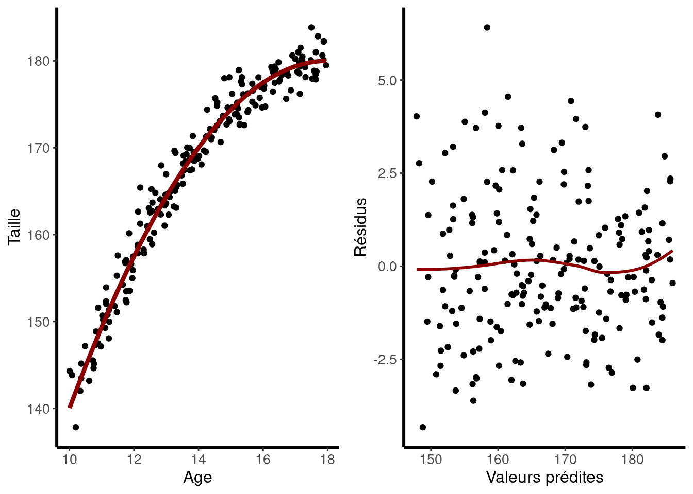

Chapitre 2 Vérification des hypothèses
2.1 Introduction
En statistiques, lorsqu’on utilise la régression linéaire pour modéliser la relation entre des variables, il est essentiel que certaines hypothèses soient respectées pour garantir la validité des résultats et des interprétations. Ces hypothèses sont au nombre de quatre :
Linéarité : La relation entre les variables doit être linéaire.
Indépendance : Les résidus, qui sont les écarts entre les valeurs observées et les valeurs prédites, doivent être indépendants les uns des autres. On parle aussi d’indépendace des sujets, des individus ou des observations.
Homoscédasticité : Les résidus doivent présenter une variance constante à travers toutes les valeurs prédites.
Normalité : La distribution des résidus doit suivre une distribution normale.
Si ces conditions ne sont pas remplies, les conclusions tirées de la régression peuvent être incorrectes. Pour valider ces hypothèses, il est courant d’analyser les résidus ou de se questionner sur la nature de nos données.
Pour mieux comprendre et illustrer ces notions, nous allons prendre un exemple concret : étudier la relation entre le poids et la taille. À travers cet exemple, nous verrons comment ces hypothèses jouent un rôle crucial dans l’interprétation des résultats.
2.2 Indépendance
2.2.1 Explications
L’hypothèse d’indépendance, souvent décrite comme l’indépendance des observations ou des individus, est centrale en régression linéaire. Elle exige que les résidus, les écarts entre les valeurs observées et prédites, soient indépendants les uns des autres.
L’importance de cette hypothèse réside dans sa capacité à assurer que le modèle ne néglige pas des facteurs clés. Par exemple, si des individus d’une même base de données sont regroupés en famille, leurs caractéristiques pourraient être influencées par des éléments génétiques et environnementaux. Ignorer de tels facteurs, comme l’appartenance familiale, peut fausser nos prédictions.
La non-conformité à cette hypothèse peut biaiser les estimations des paramètres, compromettre la fiabilité des tests d’hypothèses et entraîner des conclusions erronées. De mauvais estimateurs peuvent, par exemple, suggérer des relations qui n’existent pas réellement ou masquer des relations existantes.
Pour vérifier cette hypothèse, il est essentiel de visualiser la distribution des résidus. Une distribution non aléatoire des résidus ou des regroupements indique une possible violation. Au-delà de cette visualisation, il est crucial de comprendre l’origine des données et de s’interroger sur d’éventuelles variables omises.
En bref, l’hypothèse d’indépendance assure que notre modèle est exhaustif et que les erreurs proviennent d’aléas, et non d’omissions ou de biais.
2.2.2 Exemples et figures :
Nous avons une base de données recensant la taille de 60 adolescents en fonction de leur âge. Notre intention est de réaliser une régression linéaire entre ces deux variables. La taille est naturellement sélectionnée comme variable dépendante, et l’âge comme variable indépendante. Cependant, il y a une subtilité : nos données ne sont pas totalement indépendantes car ces adolescents sont répartis en trois familles distinctes, ce qui introduit une source de variabilité et rompt l’hypothèse d’indépendance.
Sur le graphique suivant, la droite pointillée en rouge représente la régression sans considération de l’effet familial. Les trois autres droites colorées illustrent la relation linéaire spécifique à chaque famille. Il est notable que ces dernières présentent des pentes moins prononcées, suggérant qu’en omettant l’effet familial, on surestime la relation entre la taille et l’âge.
Le second graphique illustre la différence de la relation entre les résidus et l’âge pour les deux modèles : celui sans effet familial à gauche, et celui prenant en compte cet effet à droite. Lorsque les résidus ne sont pas indépendants et que l’hypothèse d’indépendance n’est pas vérifiée, les résidus tendent à se regrouper par famille. Ce phénomène est corrigé lorsque l’effet familial est inclus dans le modèle.
2.3 Linéarité
2.3.1 Explications
Cette hypothèse ne concerne pas la forme de la relation entre les variables en elles-mêmes, mais plutôt la forme de la relation entre les variables et les coefficients du modèle. En d’autres termes, même si les données semblent suivre une courbe ou une autre forme non linéaire, il est possible d’ajuster un modèle linéaire en transformant les données ou en ajoutant des termes supplémentaires au modèle, comme des termes quadratiques ou cubiques.
Pour vérifier cette hypothèse, on vérifie si les résidus sont dispersés de manière aléatoire sans motif apparent ; si c’est le cas, c’est un bon signe. De plus, un simple graphique illustrant la relation entre nos variables peut offrir une première indication. Si les points semblent suivre une ligne droite, cela suggère une relation linéaire.
Si l’hypothèse de linéarité n’est pas respectée, cela peut entraîner des estimations biaisées et des prédictions inexactes. Il est donc crucial de vérifier cette hypothèse avant de tirer des conclusions à partir d’un modèle de régression linéaire.
2.3.2 Exemple
On essaie toujours d’évaluer la relation entre l’âge et la taille, avec un autre jeu de données. D’après les premières observations visuelles des deux graphiques ci-dessous, la relation entre ces deux variables ne suit pas un schéma linéaire, mais semble plutôt être représentée par une courbe concave.
Notre premier modèle est le suivant : \(Taille = \beta_0 + Age \times \beta_1\), il ne semble pas convenir.
En examinant la courbe de résidus par rapport aux valeurs prédites (à droite sur la figure ci-dessous), on observe un lien entre la valeur des résidus et la valeur prédite. Cela indique une défaillance dans l’ajustement du modèle aux données actuelles.
Pour améliorer cet ajustement, nous avons ensuite intégré un terme quadratique lié à l’âge, conduisant à un nouveau modèle : \(Taille = \beta_0 + Age \times \beta_1 + Age^{2} \times \beta_2\)
Le résultat est une courbe qui correspond beaucoup mieux à nos données. On constate aussi que les résidus n’ont plus une relation apparente avec les valeurs prédites, ce qui illustre une amélioration significative de l’adéquation du modèle.

2.4 Homoscédasticité
2.4.1 Explications
L’hypothèse d’homoscédasticité, également connue sous le nom d’hypothèse des variances égales, stipule que la variabilité des erreurs (ou résidus) doit rester constante quelle que soit la valeur de la variable indépendante dans une régression linéaire. En d’autres termes, la dispersion des résidus ne devrait pas augmenter ou diminuer systématiquement avec la valeur prédite.
Pour vérifier cette hypothèse, une méthode courante consiste à visualiser les résidus. En traçant les résidus par rapport aux valeurs prédites ou à la variable indépendante, la dispersion des points devrait être à peu près la même sur toute la plage de valeurs. Si, en revanche, les résidus forment un motif en forme d’entonnoir ou montrent une tendance croissante ou décroissante de la dispersion, cela pourrait indiquer une violation de l’homoscédasticité, appelée hétéroscédasticité.
Si l’hétéroscédasticité est présente, cela peut affecter la fiabilité des estimations et des tests statistiques. Comme solution, plusieurs approches peuvent être adoptées. L’une des méthodes courantes consiste à transformer les données, par exemple en utilisant le logarithme de la variable dépendante.
2.4.2 Exemple
Nous avons mené une nouvelle étude pour mesurer le temps de réaction en fonction de l’âge. Le temps de réaction est notre variable dépendante et l’âge est notre variable explicative.
Après analyse, il semble y avoir un lien entre l’âge et le temps de réaction : plus une personne est âgée, plus son temps de réaction tend à être long. Toutefois, nous avons remarqué que plus l’âge augmente, plus les résultats varient, créant une sorte de dispersion autour de la droite de régression.
Cette dispersion pourrait être due à une variabilité plus faible des temps de réaction chez les jeunes, tandis que chez les personnes plus âgées, les différences sont plus marquées.
Cela nous amène à penser que l’hypothèse d’homoscédasticité n’est pas respectée ici. En d’autres termes, l’écart entre les valeurs réelles et les valeurs prévues par notre modèle tend à changer avec l’âge.
Pour résoudre ce problème, on peut d’appliquer une transformation logarithmique sur les données du temps de réaction. En faisant cela, on observe que les différences par rapport à la droite de régression dépendent moins de l’âge.
2.5 Valeurs extrêmes
2.5.1 Explications
Les valeurs extrêmes, ou “outliers”, peuvent perturber un modèle de régression linéaire en faussant la pente et l’ordonnée à l’origine. Elles augmentent également l’erreur résiduelle, diminuant la fiabilité du modèle. Pour les détecter, on utilise souvent des graphiques de résidus, où un résidu éloigné des autres signale un outlier. Face à ces valeurs, on peut envisager de les supprimer, effectuer des transformations de données. Il est crucial de comprendre leur origine, car elles peuvent révéler des informations pertinentes sur l’étude en cours.
2.6 Variable cachée
2.6.1 Explications
L’impact d’une variable cachée est double. D’une part, elle peut fausser la relation apparente entre les variables indépendantes et dépendantes. D’autre part, elle peut masquer une relation réelle ou exagérer une relation inexistante.
Pour savoir si une variable cachée pourrait être un problème, il faut se demander si une variable pertinente a été omise, ou si des résidus présentent des tendances inexplicables. Une autre indication est lorsque des variables, qui devraient théoriquement être non liées à la variable dépendante, montrent une corrélation significative.
Les conséquences d’ignorer une variable cachée sont sérieuses. Elles peuvent mener à des conclusions erronées, influencer les décisions basées sur ces conclusions et rendre le modèle non généralisable.
Pour résoudre ce problème, il est essentiel d’incorporer toutes les variables pertinentes dans le modèle, même si cela nécessite une collecte de données supplémentaire.